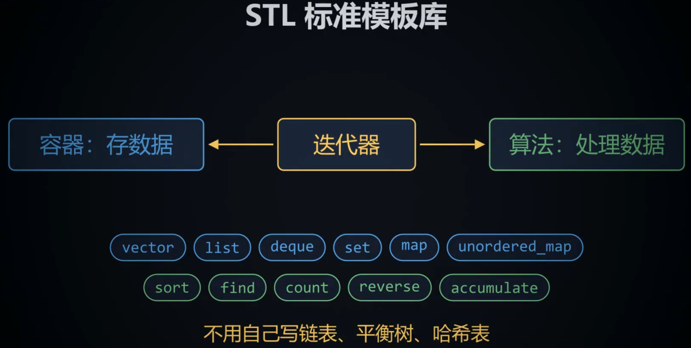

C++
相关链接：
一、程序基础
1.1 编译流程与开发环境
C++ 是编译型语言。C++ 源码要经过四步才能变成可执行程序：
- 预处理（展开宏和头文件）
- 编译（翻译成汇编/机器码）
- 汇编
- 链接（拼接库和入口）

直观理解：
.cpp只是给人看的文本，机器看不懂。编译器相当于翻译官，把整本"说明书"翻译成机器码，链接器再把它拼成能双击运行的程序。
常用编译器：GCC、Clang、微软 MSVC。
- 使用命令行进行编译，还可指定标准版本：
g++ main.cpp -o main
g++ -std=c++17 main.cpp -o main
- 或者使用集成开发环境（IDE），如 Visual Studio、VS code、Dev-C++、CLion 等，点一下按钮，编译和运行一次完成。
1.2 第一个 C++ 程序
1.2.1 main 函数与 cout / cin
#include <iostream>
int main() {
std::cout << "Hello, C++" << std::endl;
int x;
std::cin >> x;
return 0;
}
其中：
#include <iostream>引入输入输出流库int main()是程序唯一入口，有且只有一个；main是特殊函数名，不能改名也不能重载，必须返回int，不能写void mainstd::cout标准输出、std::cin标准输入（多个输入用空格分开）、std::endl换行std是标准命名空间，using namespace std只在写小程序或考试时用，写进头文件会污染全局命名空间- 语句以分号
;结尾
1.2.2 标识符与命名规则
标识符由字母、数字、下划线组成。
命名规则：
- 不能以数字开头
- 不能与关键字重名
- 区分大小写
避免以下划线开头的名字（可能与系统保留名冲突）
1.2.3 注释与语句结构
//单行注释/* ... */块注释（不能嵌套）- 每条语句以分号
;结束 - 大括号
{}表示语句块/函数体
1.3 C++ 错误类型
C++ 的错误通常按“发生阶段”分三类：
| 错误类别 | 阶段/特征 | 子类别 | 具体示例 |
|---|---|---|---|
| 编译期错误（Compile-time errors） | 编译阶段暴露，无法生成可执行文件 | 语法错误 | 漏分号、括号不匹配、关键字拼错 |
| 类型错误 | 类型不匹配、不能隐式转换、调用不存在的重载 | ||
| 语义/名字错误 | 变量未声明、函数未定义、访问权限不符、同一翻译单元内重复定义 | ||
| 模板错误 | 模板实例化失败，报错冗长 | ||
| 链接期错误（Link-time errors） | 各源文件已编译为目标文件，但链接器合并、解析符号时失败 | 未定义引用 | 只声明未定义，或未链接对应库（如 -lm、-lpthread） |
| 重复定义 | 同一符号在多个翻译单元中定义（非 inline 的全局函数/变量） |
||
| 库顺序/路径问题 | -l 顺序不当、未提供库路径 |
||
| 运行时错误（Runtime errors） | 编译链接成功、程序可运行，但运行中出问题 | 逻辑错误 | 能跑但结果不对，如循环边界写错、条件判断反了 |
| 未定义行为（UB） | 数组越界、空指针解引用、悬垂指针、有符号整数溢出、读取未初始化变量、整数除零等 | ||
| 异常 | 抛出异常未被捕获，导致 std::terminate |
||
| 资源/环境错误 | 内存分配失败、文件打不开等 |
关于 UB 的补充说明：
最危险，可能崩溃、可能“看似正常”、也可能被优化出意外结果
浮点除零有明确定义的结果（inf/NaN），不属于 UB
二、数据类型与运算
2.1 基本类型与字节大小
C++ 是静态类型语言：变量类型在定义时就要写明类型，之后不能改变。
常见基本类型：
- 整型：
char、short、int、long long - 浮点型：
float、double - 布尔型：
bool。
在 64 位平台下的字节数：
| 类型 | 字节 | 典型范围 |
|---|---|---|
char |
1 | -128 ~ 127 |
short |
2 | -32768 ~ 32767 |
int |
4 | 约 ±21 亿 |
long long |
8 | 很大 |
float |
4 | 约 6~7 位有效数字 |
double |
8 | 约 15~16 位有效数字 |
bool |
1 | true / false |
long (Windows / Linux) |
4 / 8 | 平台相关 |
long 在 Windows 是 4 字节、Linux 是 8 字节，属于平台相关考点
sizeof() 运算符：查看实际字节大小：
#include <iostream>
int main() {
std::cout << sizeof(int) << std::endl; // 输出 4
return 0;
}
2.2 unsigned 无符号数与溢出回绕
unsigned 是整数类型的修饰符，表示无符号数
- 只能修饰整数类型，如
unsigned int、unsigned char、unsigned long等 - n 位无符号数范围：
0 ~ 2^n - 1，如unsigned int的范围为 0 ~ 42 亿
超出范围的后果：
- 无符号数超出范围 → 溢出，会回绕（如
unsigned char255 + 1 = 0） - 有符号数超出范围 → 未定义行为，结果不可预测。
#include <iostream>
#include <climits>
int main() {
unsigned char a = 255;
std::cout << a + 1 << '\n'; // 256（unsigned char 与 int 相加，提升为 int，不回绕）
std::cout << (unsigned char)(a + 1) << '\n'; // 0，回绕
int x = INT_MAX;
std::cout << x + 1 << '\n'; // 未定义行为（UB）
2.3 char 字符常量与 ASCII 码
char 类型的字符常量底层是 1 字节整数，可参与算术
常用 ASCII 码: 'A' 为 65、'a' 为 97、'0' 为 48；大小写字母相差 32
注意：sizeof('A') 与 sizeof("A") 不同：
- 单引号包的是字符（占 1 字节）
- 双引号包的是字符串（自带结尾
\0，如"A"占 2 字节）
典型应用：
- 大小写转换：
ch + 32把大写变小写，例如'A'+32为'a' - 判断数字字符：
'0' <= ch && ch <= '9'
2.4 整型/浮点常量与进制
进制：
- 十进制：直接写
- 八进制：以
0开头。例如 八进制数012等于十进制的10 - 十六进制：以
0x开头。例如 十六进制数0x2A等于十进制的42
浮点常量：默认 double，加 f/F 后缀才是 float。例如 float f = 3.14f;
科学计数法：如 1e3 为 1000。例如 double d = 1.5e-2;
布尔：true/false 参与输出时显示为 1/0。例如 bool b = true; std::cout << b; // 输出 1
补充提醒：
- 整型常量还可用
u（unsigned）、l/ll（long / long long）后缀，如42u、42LL - C++14 起支持二进制字面量
0b1010 - C++14 起可用单引号分隔数位，如
1'000'000。
2.5 符号常量: #define / const / constexpr
#define是预处理阶段的宏替换（文本替换），无类型、无作用域、编译前替换。例如#define PI 3.14const有类型检查、遵守作用域。例如const int PI = 3.14;constexpr是编译期求值的常量表达式，用于数组大小、模板参数等必须编译期确定的场合。例如constexpr int SQ = 4 * 4;
宏只是文本替换，
const是真正的变量能用
const/constexpr就不要用#define（除了头文件保护）
constexpr修饰的变量必须在编译期能算出值。
2.6 类型转换：隐式转换、显式转换、auto
- 隐式转换：小类型向大类型提升（
int→float→double），赋值/运算时自动发生，浮点转整型会截断小数。- 例如
5/2为2，5.0/2为2.5
- 例如
- 显式转换：推荐
static_cast<T>(x);- 例如
int n = static_cast<int>(3.9); // 3, 截断
- 例如
auto让编译器自动推导类型，不产生转换。
2.7 算术运算
- 除法：根据操作数是否都是整数，分为：
- 整数除法：向零截断。例如
5 / 2 == 2，-5 / 2 == -2 - 浮点除法，保留小数。例如
5.0 / 2 == 2.5
- 整数除法：向零截断。例如
- 取余：余数符号跟随被除数。例如
5 % 2 == 1，-5 % 2 == -1，5 % -2 == 1- 判断奇偶：
x % 2 == 0 - 取某数的个位：
n % 10
- 判断奇偶：
- 自增：前置
++i（先加后用），后置i++（先用后加）
C++ 没有
**运算符，即没有乘方运算符。乘方运算需要使用pow函数，定义在<cmath>头文件中。
2.8 关系运算与逻辑运算
- 关系运算符：
==、!=、<、<=、>、>=- 结果是
bool（1/0）
- 结果是
- 逻辑运算符：
&&与、||或、!非- 短路求值：
&&左边为假就不算右边，||左边为真就不算右边
- 短路求值：
2.9 位运算
&按位与|按位或^按位异或~按位取反<<左移（乘 2）>>右移（除 2）。
典型应用：
- 判断奇偶：
(x & 1) == 1x % 2 != 0更安全
- 无符号数乘 2：
x << 1x * 2更安全
- 取低 4 位：
x & 0xF
x << 1不改变x本身，要x = x << 1才生效；
^是异或不是乘方。
2.10 表达式运算符：三目 / 逗号 / sizeof
- 三目运算符：
条件 ? 真值 : 假值- 例如
int max = (a > b) ? a : b;
- 例如
- 逗号表达式：整体取最后一个表达式的值
- 例如
int a = (1 + 2, 3 + 4, 5 + 6); // 执行过程：先算 1+2=3 (丢弃) -> 再算 3+4=7 (丢弃) -> 最后算 5+6=11。最终 a 的结果是 11。
- 例如
sizeof运算符：在编译期求对象/类型字节数- 例如
int n = sizeof(arr) / sizeof(arr[0]); // 数组元素个数
- 例如
sizeof 运算符注意事项：
sizeof是单目运算符不是函数，sizeof(arr)对数组名返回整个数组大小
int arr[10] = {0};
std::cout << sizeof(arr); // 输出 40
// 一个 int 占 4 字节，10 个 int 就是 40 字节。
// 此时的 arr 就是数组本身。
- 当数组作为函数参数时，退化成指针，此时
sizeof只返回指针大小
void printSize(int arr[]) {
std::cout << sizeof(arr);
// 注意：这里的 arr[] 只是长得像数组，
// 实际上在编译器眼里，它等同于 int* arr (一个指针变量)
}
int main() {
int arr[10] = {0};
printSize(arr); // 输出 8（在 64 位系统下）
}
2.11 运算符优先级与结合性
- 运算符优先级（从高到低）：括号
()→ 单目 (++ -- * & ! ~ sizeof) → 乘除 → 加减 → 移位 → 关系 → 相等 (== !=) → 位与 → 位异或 → 位或 → 逻辑与 → 逻辑或 → 三目 → 赋值 → 逗号。 - 结合性：赋值右结合，其余多数左结合。
记不住？加括号！

三、控制结构
3.1 if / else
if (条件) {语句;}
else if {语句;}
else {语句;}
悬空 else 规则：else 总是与最近的、尚未配对的 if 结合（不看缩进）
3.2 switch
switch (整型表达式) 按值跳转
case值必须是整型常量表达式case里定义变量最好加{}隔离作用域- 漏写
break会贯穿（继续执行下一个case） default处理所有不匹配的情况
switch (day) {
case 1: cout << "Mon"; break;
case 2: cout << "Tue"; break;
case 3: cout << "Wed"; break;
case 4: cout << "Thu"; break;
case 5: cout << "Fri"; break;
case 6: cout << "Sat"; break;
case 7: cout << "Sun"; break;
default: cout << "?";
}
3.3 while / do-while / for
while (条件){循环体;}先判断（可能执行 0 次）do {循环体;} while (条件);先执行（至少执行 1 次）for (初始化; 条件; 更新){循环体;}适合已知次数
while条件不更新会死循环；do-while末尾的分号不能丢。
示例：计算 1 到 10 的和：
// while
int i = 1;
while (i <= 10) {
sum += i;
++i;
}
// for
for (int i = 1; i <= 10; ++i) {
sum += i;
}
// do-while
int i = 1;
do {
sum += i;
++i;
} while (i <= 10);
3.4 break / continue / 范围 for
break立即退出当前循环或switchcontinue跳过本次循环剩余语句，进入下一次循环- C++11 范围
for：for (类型 变量 : 容器)自动遍历每个元素，是迭代器遍历的简写
for (int x : v) cout << x; // 只读;
for (int& x : v) x *= 2; // 加引用才能改原元素
范围
for想修改元素必须用引用；范围for底层依赖begin/end，遍历时不要修改容器大小（迭代器失效）。
四、数组与字符串
4.1 一维数组
- 定义数组：
int a[5];（在栈上分配 5 个int，元素未初始化，值不确定） - 初始化数组：
int a[5] = {};或int a[5] = {1,2,3};（未列出的元素自动补 0） - 访问数组元素：
a[4]（下标从 0 开始，访问第 5 个元素；越界是 UB） - 计算元素个数：
sizeof(a)/sizeof(a[0])（数组作函数参数会退化为指针，此时失效）
注意事项：
- 数组下标从 0 开始，在内存中连续存放
- C++ 不检查越界（最危险的 bug 之一），越界读写是未定义行为（可能不报错但很危险）
- 数组不能整体赋值（
a = b非法） - 数组名是常量地址不能自增/赋值
- 函数参数里数组退化为指针，
sizeof失效
4.2 二维数组
- 定义二维数组：
int a[3][4];是 3 行 4 列，在内存中按行存放 - 初始化：
int a[2][3] = {{1,2,3},{4,5,6}};或平铺int a[2][3] = {1,2,3,4,5,6};- 第一维可以省略，第二维（表示每行多长）不能省。例如
int a[][4]合法
- 第一维可以省略，第二维（表示每行多长）不能省。例如
- 访问二维数组：
a[i][j]等价于*(*(a+i)+j)
二维数组求和示例：
for (int i = 0; i < 3; ++i){
for (int j = 0; j < 4; ++j){
sum += a[i][j];
}
}
4.3 C 风格字符串
C 风格字符串：以 \0 结尾的字符数组。例如 char s[] = "hello";
sizeof含\0，实际是 6 字节（5 个字符 + 结尾\0）#include <cstring>strlen求长度，统计到\0为止（不含\0）strcpy复制strcat拼接strcmp逐个字符比较（相等返回 0，前者大返回正数，前者小返回负数）
易错提醒：
strcpy和strcat不检查目标空间，写越界是常见的安全漏洞cin >>读字符串遇空格就停（"hello world" 只读入 hello）strcmp返回 0 表示相等（不是 1）s1 == s2比较的是两个地址
#include <iostream>
#include <cstring>
using namespace std;
int main() {
char s[] = "hello"; // 6 字节：'h','e','l','l','o','\0'
cout << strlen(s) << endl; // 5（不含 \0）
cout << sizeof(s) << endl; // 6（含 \0）
char t[20];
strcpy(t, s); // 复制 "hello"（不检查空间）
strcat(t, " world"); // 拼接 → "hello world"
cout << t << endl; // hello world
cout << strcmp(s, "hello") << endl; // 0 表示相等
char name[20];
cin >> name; // 遇空格停止，"hello world" 只读入 hello
cout << name << endl;
return 0;
}
4.4 现代字符串：C++ string 类
C++ string 类：#include <string> 自动管理内存，不怕越界
+拼接==、>、<比较size()/length()返回长度（不含\0）substr(pos, len)切片find(sub)查找子串，找不到返回string::nposcin >> s读字符串，遇空格停止getline(cin, s)读整行（含空格）。
#include <string>
string s = "hello";
string t = s + ", world";
s == "hello" // true
s < "world" // true
t.size() // 12
t[1] // 'e'
s.substr(1, 3) // "ell"
t.find("world") // 7
t.find("xyz") == string::npos //`find` 用 `npos` 判断，不是用 -1。
cin >> 和 getline 混用要先 cin.ignore() 清掉残留的换行：
cin >> age;
cin.ignore(); // 吃掉换行
getline(cin, name);
五、指针、引用与动态内存
5.1 指针：存地址的变量
- 定义指针：
int x = 5; int *p = &x;&表示取地址，拿到变量起始地址（十六进制显示）*表示p是一个指针。int* p等价于int *p- 注意：
int* p, q;：p是指针，q不是指针！
- 注意：
- 解引用：
*p访问p所指向地址的内存*p = 10是改值，p = &y是改指向；- 对空指针/野指针解引用会崩溃。
int x = 5;
int* p = &x;
*p = 10; // x 变成 10
cout << p; // 打印地址（十六进制显示）
5.2 数组与指针
- 数组名
a自动转换成首元素地址&a[0] - 令
int* p = a，则a[i] == *(a + i) == p[i] == *(p + i) - 指针加整数跳过
i个元素（不是i字节）：int* p = a; p + 1指向a[1]p + 1对int*是 +4 字节、对char*是 +1 字节，按类型步进
- 指针是变量，可以自增自减（
p++） - 数组名
a是常量指针，不能修改，比如不能自增自减（a++）

5.3 const 与指针
const int *p：指向常量的指针，*p不能改，p可以换int* const p：指针常量，p不能换，*p可以改
记忆口诀：const 在 * 左边 → 指向的值不能改；const 在 * 右边 → 指针本身不能改。
const char *s = "hi";
s++; // ✓ 可以：修改指针的指向（s 变成指向 'i'）
s[0] = 'H'; // ✗ 错误：不能改内容（"hi" 存放在只读数据段，修改会导致段错误）
指向指针的指针：
#include <iostream>
using namespace std;
int main() {
int a = 7; // 实际变量
int *p = &a; // 一级指针：指向 a
int **pp = &p; // 二级指针：指向 p
cout << "a 的值: " << a << endl; // 输出 7
cout << "*p 的值: " << *p << endl; // 输出 7
cout << "**pp 的值: " << **pp << endl;// 输出 7
// 通过二级指针修改底层数据
**pp = 99; // 两次解引用，直接修改了 a 的值
return 0;
}
5.4 空指针 / 野指针 / 悬空指针 / 越界
nullptr (C++11) 表示空指针，代替 NULL。例如 int* p = nullptr
三大坑：
- 野指针：未初始化指针
- 悬空指针：指向已释放内存，如函数返回局部变量地址
- 指针越界：指向数组之外
// 1. 野指针（没初始化）
int *p;
*p = 5; // 危险！在随机地址写入数据
// 2. 悬空指针（内存已释放 / 局部变量已销毁）
delete p;
*p = 5; // 危险！访问已释放的内存
// 3. 越界访问（超出数组范围）
int a[3];
a[3] = 1; // 危险！合法下标只能是 0, 1, 2
好习惯：
- 指针定义时就初始化
delete后把指针置nullptr防止二次释放- 解引用前先判断
p != nullptr
5.5 引用：变量的别名
引用是变量的别名，不是新变量。例如 int& r = x;
- 定义时必须初始化，否则编译错
- 不能换绑（
r永远是x的别名） - 不存在“空引用”
- 引用没有独立内存（同址）
int x = 5;
int& r = x;
r = 10; // x 变成 10
void f(int& a) {
// a 是外部传入变量的引用，修改 a 会直接修改外部变量
}
注意：不能返回局部变量的引用!
int& getBadRef() {
int x = 10; // 局部变量，存在栈上
return x; // 错误！x 在函数结束时就被销毁了
}

5.6 参数传递：值传递 / 指针传递 / 引用传递
引用最大的作用是做函数参数。
三种参数传递方式：
- 值传递：形参是实参的拷贝，改形参不影响实参
- 指针传递：传地址拷贝，能通过指针改目标值
- 引用传递：直接操作实参本体
- 传大对象用
const引用（const string&），不修改不拷贝
- 传大对象用
// 1. 按值传递（失败）
void swap1(int x, int y) {
int t = x; x = y; y = t;
}
swap1(a, b); // a=1 b=2 不变，x, y 是副本
// 2. 传指针（成功）
void swap2(int *x, int *y) {
int t = *x; *x = *y; *y = t;
}
swap2(&a, &b); // a=2 b=1 交换成功
// 3. 传引用（成功，最简洁）
void swap3(int &x, int &y) {
int t = x; x = y; y = t;
}
swap3(a, b); // a=2 b=1 交换成功
按值传大对象（
string/vector）会整份拷贝，代价高函数内想改实参：指针或引用二选一，但指针可能为空，引用更安全
5.7 内存布局：代码区 / 全局区 / 栈区 / 堆区
程序运行时内存分四块：
- 代码区：存放程序指令，只读
- 全局区：存放全局变量、static 静态变量，程序结束才释放
- 栈区 stack：存放局部变量、参数，函数结束自动释放，容量小
- 堆区 heap：
new/malloc申请，delete手动释放，容量大，生命周期由自己控制
栈像自动收拾的临时工位，函数一结束东西自动清走；堆像自选仓库，你租多大就多大，但必须自己还钥匙（
delete）。

注意：
- 栈区容量有限，递归太深或定义超大局部数组 → 栈溢出
- 全局/静态变量不初始化 → 默认 0
- 局部变量不初始化 → 垃圾值
5.8 new / delete 动态内存
new 在堆上创建对象并返回指针，delete 释放
new[] 分配数组必须配 delete[]
注意：
- 忘记
delete→ 内存泄漏 - 重复
delete同一块内存 → 崩溃 - 内存不足 →
new失败，抛bad_alloc。
后续会用智能指针替代裸
new/delete。智能指针会自动解决内存泄漏与重复释放问题
void func() {
int* p = new int(5);
// 1. 变量 p 本身是个指针，它存在“栈（Stack）”上。
// 2. 等号右边 new int(5) 在“堆（Heap）”上申请了 4 个字节，存入了 5。
// 3. 然后，把堆上这块内存的地址，赋值给了栈上的 p。
delete p; // 释放的是堆上的那 4 个字节。此时 p 变成了“悬空指针”，但它自己依然在栈上。
p = nullptr; // 好习惯：释放后置空，防止产生“悬空指针”
// 分配数组
int* a = new int[10];
delete[] a;
a = nullptr;
}
六、函数
6.1 函数声明与定义
- 函数定义：
返回类型 函数名(参数列表) { 函数体 }。- 返回类型为
void：表示无返回值
- 返回类型为
- 函数原型声明：
返回类型 函数名(参数类型);不带函数体，参数名可省略- 调用前必须已有声明
- 函数参数传递方式：参考 5.6 节
main由系统调用，其他函数由代码调用
声明和定义不一致 或 先调用后声明 → 编译错
函数不能嵌套定义（C++ 不允许函数里再定义函数）
// math_utils.h（函数原型声明）
int add(int, int); // 参数名可省略
// ------------------------------------
// math_utils.cpp（函数定义）
int add(int a, int b) { return a + b; }
// ------------------------------------
// main.cpp（调用）
int main() {
cout << add(2, 3); // 5
}
6.2 默认参数
int f(int a, int b = 0, int c = 0);
- 默认参数必须从右往左连续设置，不能跳着设（不能 a 默认而 b 不默认）
- 通常，默认值在声明处给出 → 定义里可不再写
- 调用
f(1)时b、c用默认值；f(1, , 3)非法（不能跳过中间参数） - 默认参数与重载混用 → 可能造成二义性
6.3 函数重载
函数重载：函数同名但参数个数或类型不同。编译器按实参匹配最合适的一个。
- 仅返回类型不同 → 不算重载
- 重载解析失败（都能转、都不精确） → 二义性。
int max(int a, int b);
double max(double a, double b); // 重载合法
int f();
void f(); // 重载非法，仅返回类型不同
6.4 inline：编译期展开
inline 内联函数：编译时把函数体直接嵌入调用点，省去函数调用开销（压栈、跳转）。例如 inline int add(int a, int b) { return a + b; }
- 适合小函数，大函数编译器可能忽略
inline
inline vs 宏：
- 宏是“无脑替换文本”
inline是“安全地原地展开”，有类型检查、遵守作用域，是宏的现代替代

6.5 递归：必须有终止条件
函数调用自己叫递归
- 递归必须有终止条件
- 每层调用都会在栈上压帧。
- 忘记终止条件 → 栈溢出
- 深度太大的递归 → 可能超时/崩溃。可改用循环或记忆化
int fib(int n) {
if (n <= 1) return n;
return fib(n-1) + fib(n-2);
}
6.6 变量的存储类别：auto / static / extern
auto（默认）：局部变量，进入作用域创建（栈上），函数结束销毁static局部变量：只初始化一次，函数多次调用间保留值static全局变量：限定本文件可见extern：声明别的文件里定义的全局变量register（现代 C++ 已废弃）：建议放寄存器
void counter() { static int n = 0; ++n; cout << n; } // 每次调用输出 1、2、3......
注意：
static局部变量初始化只执行一次- 全局变量与局部变量同名时，局部屏蔽全局，用
::x访问全局 - 局部变量不初始化是垃圾值
七、结构体、枚举与预处理指令
7.1 结构体与内存对齐
结构体把不同类型打包成一个整体。
- 访问成员用
.，指针访问用->。
struct Student {
string name;
int age;
double score;
};
Student s; // C++ 可省略 struct
s.name = "Tom";
s.age = 18;
Student* p = &s;
p->age = 19; // p->age 等价于 (*p).age
sizeof(结构体) 不等于各成员大小之和（有对齐填充）
- 内存对齐：成员按自身大小对齐存放，结构体总大小是最大对齐单位的整数倍，中间可能有填充字节，成员声明顺序会影响填充大小（比如前两个
char存在一个int大小的空间）。
7.2 枚举：enum 与 enum class
枚举定义一组有名字的整数常量。例如 enum Color { RED, GREEN, BLUE };
-
默认从 0 递增，也可指定值，后面接着递增。
-
旧
enum的枚举值会泄漏到外层作用域且能隐式转int（易冲突） - 新代码（C++11）优先
enum class。enum class是强类型枚举：不隐式转换为int，必须用类型::值访问，避免名字冲突。
enum class Color { RED, GREEN };
Color c = Color::RED;
int n = static_cast<int>(c); // 强类型需显式转换

7.3 类型别名：typedef / using
typedef unsigned long ul;给类型unsigned long起别名ul- C++11 推荐
using ul = unsigned long;写法更清晰，且能配合模板
7.4 宏与预处理指令：#define / #include / 条件编译
以 # 开头的指令是预处理指令，在编译之前执行。
#define定义宏（文本替换）#define PI 3.14159把PI替换为3.14159- 文本替换的陷阱：带参数的宏必须整体加括号：
#define SQ(x) ((x)*(x))。否则当SQ(1+2)会展开成1+2*1+2 - 宏无作用域无类型，能用
const/constexpr就别用宏。
#include把另一个文件的内容原样复制进来#include <iostream>去系统目录找头文件#include "my.h"先在当前目录找，找不到再到系统目录找。
#ifdef/#ifndef/#endif条件编译，根据特定的宏是否被定义决定某部分代码是否参与编译- 常用来写调试代码和跨平台代码。
条件编译的应用场景：
- 场景一：防止头文件重复包含（最常见）
// math_utils.h
#ifndef MATH_UTILS_H // 如果没有定义过这个宏
#define MATH_UTILS_H // 那么现在就定义它
// 这里放你的声明和定义
int add(int a, int b);
#endif // MATH_UTILS_H 结束
- 场景二：调试代码的开关
#define DEBUG // 开启调试模式（如果在代码里注释掉这一行，下面的 cout 就不会被编译）
#ifdef DEBUG
cout << "调试信息";
#endif
#undef DEBUG // 用完就取消，防止污染后面代码
#ifdef NDEBUG // No DEBUG 的缩写
cout << "正式版（性能最优）";
#else
cout << "测试版（包含调试信息）";
#endif
- 场景三：跨平台兼容代码
#ifdef _WIN32
// Windows 专属代码
#include <windows.h>
Sleep(1000);
#elif __linux__
// Linux 专属代码
#include <unistd.h>
sleep(1);
#else
// 其他平台
#error "不支持的操作系统"
#endif
宏从哪来？—— 编译器的“命令行参数”： 现代开发（比如使用 CMake、Makefile 或直接在 VS/VS Code 里配置）时，我们通常在编译选项中定义宏，而不是在代码里写。例如，使用 GCC/G++ 编译时：
# 编译测试版（包含调试信息）
g++ main.cpp -DDEBUG -o app_debug
# 编译发布版（定义 NDEBUG，这是 C++ 标准推荐的 Release 宏）
g++ main.cpp -DNDEBUG -o app_release
7.5 多文件程序与头文件保护
大程序要拆成多个文件，头文件 .h 放声明，源文件 .cpp 放定义。用到的地方 #include 头文件。
头文件保护（避免重复包含）：
#ifndef MY_H #define MY_H ... #endif守卫#pragma once一行搞定（现代编译器普遍支持，更简洁）。

八、类与对象
8.1 面向对象三大特征：封装 / 继承 / 多态
面向对象思想

面向对象三大特征：
- 封装：把数据和操作数据的函数绑在一起，对外只暴露接口
- 继承：子类复用父类，is-a 关系
- 多态：同一接口不同实现（虚函数）。
对象是类的实例

8.2 封装：访问控制
class 与 struct 唯一区别：默认访问权限
class默认privatestruct默认public。
访问控制：
public任何地方可访问private（默认）仅本类成员函数可访问（这是封装的关键）protected本类及派生类可访问

class Student {
private:
string name;
public:
void setName(string n) {
name = n;
}
};
在类外定义成员函数要写 类名::，例如 Student::setName。

8.3 this 指针
this 是指向“当前调用成员函数的那个对象”的指针。成员函数访问的成员变量都是通过 this 找到的。
this指针作用：同一份函数代码操作不同对象的数据this不能改指向（const指针）- 静态成员函数没有
this。
void set(int age) {
this->age = age;
} // 参数与成员同名时用 this 区分
返回 *this 还可实现链式调用：
Counter &add(int n) {
this->n += n; return *this;
}
c.add(1).add(2).add(3); // 链式
8.4 对象里只存数据成员
对象里只存成员变量。
sizeof(空类) = 1：编译器给空对象占 1 字节，保证不同对象的地址不同。- 成员函数不占用对象空间（在代码区），所有对象共用一份
- 只有数据成员决定对象大小（含虚函数时会多个 vptr）
有虚函数的类会额外多一个虚表指针（8 字节）。
九、构造函数与析构函数
9.1 构造函数
构造函数 类名(){} 在创建对象时自动调用：
- 函数名为类名
- 无返回类型
- 可重载，可以有默认参数
- 一般是
public - 构造函数不能调虚函数（多态未建立）
默认构造函数：
- 没定义任何构造函数 → 编译器生成一个什么都不做的默认构造函数
- 定义了构造函数 → 默认构造就不再自动生成
- 定义了带参构造 →
Student s;不写任何参数会编译错（默认构造没了）→ 必须手动写默认构造函数
#include <iostream>
#include <string>
using namespace std;
class Student {
private:
string name;
int age;
public:
// 1. 默认构造函数（无参）
// 因为自己写了带参构造，编译器不再自动生成，所以必须手动写出来
Student() {
name = "unknown";
age = 0;
cout << "默认构造函数被调用" << endl;
}
// 2. 带参数的构造函数（使用初始化列表）
Student(string n, int a) : name(n), age(a) {
cout << "带参构造函数被调用" << endl;
}
// 3. 带默认参数的构造函数（注意：如果同时存在 1 和 3，可能会产生二义性，这里仅作演示）
// Student(string n = "Tom", int a = 18) : name(n), age(a) {}
void print() {
cout << "姓名: " << name << ", 年龄: " << age << endl;
}
};
9.2 初始化列表
初始化列表：Student(string n, int a) : name(n), age(a) {}。
必须用初始化列表的三种成员：
const成员- 引用成员
- 没有默认构造函数的成员对象

class A {
const int c;
int& r;
public:
A(int x, int& y) : c(x), r(y) {}
}; // 必须初始化列表
易错点：实际初始化顺序与初始化列表的书写顺序无关，只与成员声明顺序有关——声明在前先初始化!
9.3 析构函数
析构函数 ~类名(){} 负责释放资源：
- 无参数、无返回类型
- 不能重载，一个类只有一个
- 对象销毁时自动调用：
- 局部对象（栈对象）离开作用域时
new出来的堆对象delete时- 全局对象
main结束后

class Buf {
int *data;
public:
Buf() { data = new int[100]; }
~Buf() { delete[] data; } // 收尾
};
需要释放资源的类必须自己写析构；局部对象一定会被析构（哪怕函数提前 return 或抛异常）。
9.4 构造与析构顺序：先构造的后析构
- 同一作用域的局部对象先构造的后析构
- 全局对象在
main之前构造、main之后析构 - 静态局部对象第一次执行到才构造、程序结束时析构
- 对象数组逐个成员按顺序构造


十、拷贝构造
10.1 拷贝构造函数
用已有对象初始化新对象时调用拷贝构造。
-
形参必须是引用（通常
const引用）：Point(const Point &p)- 如果参数按值传
Point(Point p)→ 会无限递归（拷贝构造又要拷贝构造）
- 如果参数按值传
-
什么时候调用拷贝构造：
-
用对象初始化对象
A b = a;A b = a;与b = a;不同，前者是拷贝构造，后者是赋值。
- 函数按值传参
Point(Point p) - 函数按值返回临时对象
Point g(){return p;}- C++17 返回值优化：返回临时对象时强制省略拷贝构造，直接在调用处构造对象

10.2 浅拷贝 / 深拷贝 / 拷贝赋值运算符
浅拷贝（默认）：逐成员拷贝
int、double类型的成员变量没问题- 指针成员 → 默认拷贝是浅拷贝 → 只拷贝地址 → 两个对象指向同一块堆内存 → 析构时双重释放 → 崩溃
指针成员必须深拷贝!

深拷贝：拷贝构造里 new 一块新内存并复制内容，让两个对象各自持有独立资源。
拷贝赋值运算符 A& operator=(const A& o) { 拷贝赋值 }。标准写法：
- 自赋值检查
if (this == &o) return *this; - 释放旧资源
- 分配新内存并拷贝新资源
- 返回
*this→ 支持连等a = b = c

10.3 三法则 / 五法则 / 零法则
- 三法则：若类需要自定义析构函数、拷贝构造函数、拷贝赋值运算符中的任何一个，那多半三个都需要（否则资源管理不一致）
- 五法则：C++11 在三法则的基础上加移动构造、移动赋值
- 零法则：现代 C++ 用
string/vector/智能指针 管理资源，就不用写任何特殊成员。
现代代码优先零法则，能少写就少写。
十一、静态成员、常量与友元
11.1 静态数据成员
static 数据成员属于类本身，所有对象共享一份，不占对象空间。
- 在类外定义/初始化一次（如
int Student::count = 0;），因为它是全局生命周期。 - C++17 起也可以在类内写
inline static int count = 0;直接初始化 - 可用类名访问：
Student::count
11.2 静态成员函数
static 成员函数没有 this，因此只能访问静态成员，不能访问非静态成员
- 可用类名直接调用，不依赖对象。例如
Student::getCount()
静态成员典型应用：对象计数器：
class Student {
private:
static int count;
public:
Student() { count++; }
~Student() { count--; }
static int getCount() { return count; }
};
int Student::count = 0; // 类外定义
// sizeof(Student) 不含 count，因为 count 是静态成员，存放在全局区
11.3 常对象与常成员函数
常对象的数据成员不能修改。如 const A a;
- 常对象只能调用常成员函数。
const对象调非const函数 → 编译错
常成员函数在参数表后加 const 声明“这个函数不修改对象”，如 int getAge() const { return age; }
- 常成员函数里修改成员变量 → 编译错
- 建议：所有不修改数据的成员函数都声明成
const，否则常对象调用会编译错 - 想修改个别成员用
mutable const重载（同一函数名const与非const版本）是合法的，按对象是否const选版本
class A {
int age;
mutable int n;
public:
int getAge() const { return age; } // 常成员函数，不能改 age
void setAge(int a) { age = a; } // 普通成员函数
void test() const { n++; } // 想改成员需 mutable
void print() const { cout << "const"; } // const 重载
void print() { cout << "non-const"; }
};
const A a;
// a.setAge(10); // 错误：常对象不能调非 const 函数
a.getAge(); // 正确
a.print(); // 调用 const 版本的 print
11.4 友元
friend 声明让外部函数/类访问本类私有成员。
友元关系性质：单向、不传递、不继承

友元典型用途：重载 << 运算符
class A {
int x;
friend ostream& operator<<(ostream&, const A&);
};
友元破坏封装，只在必要时用（如运算符重载）
11.5 组合与对象成员
一个类的对象作为另一个类的数据成员叫成员对象，这种关系叫组合。例如 class B { A a; };
- 成员对象先构造 （按声明顺序），再构造自己
- 析构相反，先析构自己再析构成员
优先用组合而非继承（面向对象设计原则）
has-a 是组合与聚合的统称，组合是强 has-a，聚合是弱 has-a
十二、运算符重载
12.1 重载形式与规则
重载运算符让自定义类型支持 + - * / == << 等。例如 A operator+(const A& other) const

运算符重载的两种形式：
- 成员函数：隐含传入
this指针作为左操作数 - 友元 + 全局函数：所有操作数都要作为参数传进来
- 适用场景：左操作数不是本类对象。例如
<</>>必须重载为全局函数（友元），因为左操作数是ostream/istream对象而不是this指针
- 适用场景：左操作数不是本类对象。例如
重载规则：
- 至少一个操作数是自定义类型
- 不能改变优先级、结合性、操作数个数
- 不能发明新运算符
五个不能重载的运算符：
.成员访问、::作用域、?:三目、.*成员指针、sizeof四个重载为成员函数的运算符：=、[]、()、->
// 算术运算符（加、减）
// 成员函数实现：a + b 等价于 a.operator+(b)
Complex operator+(const Complex& c) const {
return Complex(real + c.real, imag + c.imag);
}
// 复合赋值运算符（+=、-=）
// 通常返回自身的引用（*this），因为要支持连续赋值（如 a += b += c）
Complex& operator+=(const Complex& c) {
real += c.real;
imag += c.imag;
return *this;
}
12.2 输出运算符 << 重载
输入 / 输出运算符 >> / << 重载必须采用 友元 + 全局函数 的形式
- 写成全局函数并在类里声明
friend，因为左操作数ostream不是你的类。 - 返回
ostream引用支持连写cout << a << b。 - 输入
>>与<<重载的区别：第二个参数绝对不能加const
class A {
int x;
// 1. 类内声明友元（输出和输入）
friend ostream& operator<<(ostream&, const A&);
friend istream& operator>>(istream&, A&);
};
// 2. 类外实现输出
ostream& operator<<(ostream& os, const A& a) {
return os << a.x;
}
// 3. 类外实现输入
istream& operator>>(istream& is, A& a) {
return is >> a.x;
}
12.3 自增运算符 ++ 重载
- 前置
++：A& operator++() { ++n; return *this; } - 后置
++多一个占位int参数：A operator++(int) { A old = *this; ++n; return old; }
前置
++返回自身引用后置
++返回旧值的副本（返回对象不是引用），后缀的int参数只是占位符
#include <iostream>
using namespace std;
class Counter {
private:
int n; // 成员变量
public:
// 构造函数
Counter(int val) : n(val) {}
// 1. 前置 ++：先加，再返回自身引用
Counter& operator++() {
++n;
return *this;
}
// 2. 后置 ++：先保存旧值，再加，返回旧值（必须按值返回，不能返回引用）
Counter operator++(int) {
Counter old = *this; // 拷贝当前状态
++n; // 自身加 1
return old; // 返回旧状态的副本
}
// 辅助打印函数
void print() const {
cout << "n = " << n << endl;
}
};
int main() {
Counter c(5);
// 验证后置 ++
Counter a = c++;
cout << "执行 c++ 后：" << endl;
cout << "a: "; a.print(); // a=5
cout << "c: "; c.print(); // c=6
// 验证前置 ++
Counter b = ++c;
cout << "执行 ++c 后：" << endl;
cout << "b: "; b.print(); // b=7
cout << "c: "; c.print(); // c=7
return 0;
}
12.3 赋值运算符 = / 下标运算符 [] / 调用运算符 () 重载
- 赋值运算符
operator=：让对象可以赋值给其他对象 - 下标运算符
operator[]：让对象可以像数组一样用下标访问元素 - 调用运算符
operator()：让对象可以像函数一样被调用。这种对象也叫函数对象（仿函数）
Arr &operator=(const Arr &o) { ...; return *this; }
a = b = c;
int &operator[](int i) { return d[i]; }
a[1] = 5;
int operator()(int a, int b) const { return a + b; }
add(2, 3) // 5
十三、继承
13.1 继承方式：public / protected / private
继承让新类在已有类的基础上扩展，已有的类叫基类或父类，新的类叫派生类或子类。
继承表达的是“是一个”（is-a）的关系。
class Student : public person {};表示Student继承person，即学生是一个人。
继承方式影响基类成员在派生类中的访问级别（不改变基类成员本身的访问权限）
三种继承方式：
public继承：保持原级别（实际开发绝大多数采用public继承）protected继承：把public降为protectedprivate继承：把public/protected都降为private
基类
private成员无论哪种继承，派生类都不能直接访问父类
protected的意义：希望子类能用，又不想对外公开的成员就设为protected

class Animal {
public:
void eat() {}
};
class Dog : public Animal {};
Dog d;
d.eat(); // 公有继承下可以访问
13.2 继承中的构造与析构
派生类不继承基类的构造函数和析构函数。
继承中的构造与析构顺序：
- 构造派生类对象时：基类构造 → 成员构造 → 派生类构造体
- 析构顺序完全相反：派生类析构体 → 成员析构 → 基类析构
class B : public A {
public:
B(int x) : A(x) {}
}; // 显式调基类构造。不写 → 调用基类默认构造
基类无默认构造时必须在初始化列表显式调用基类构造。
class P { public: P(int x) {} }; // 假设父类构造函数需要一个参数
class S : public P { public: S() {} }; // 错误：P 没有默认构造
13.3 隐藏与重写
隐藏：派生类定义了与基类同名的成员函数（即使参数不同），基类版本在派生类作用域中被遮蔽，调用需加作用域 A::f()。

重写：派生类重新实现基类虚函数，要求同名同参同返回（override 关键字让编译器检查）。
class B : public A {
void f() override {}
}; // 重写（虚函数）
b.f(); // 调派生类
b.A::f(); // 调基类
隐藏与重写的区别：
- 隐藏是“遮蔽”，重写是“覆盖虚表项”，两者本质不同
- 重写同名不同参会被当成隐藏而不是重写（加
override立刻报错帮你发现）
13.4 赋值兼容规则与对象切片
赋值兼容规则：派生类对象可以赋值给基类对象 / 传地址给基类指针 / 初始化基类引用，反过来都不行。
对象切片：把派生类对象赋值/按值传给基类时，只保留基类部分，派生类新增成员被切掉。结果丢失多态。

- 对象切片避免方法：用基类指针/引用操作派生类对象。
A a = b; // b 是派生类，切片
A& r = b; // 引用不切片，多态生效
13.5 多继承与二义性
多继承：一个类继承多个基类。例如 class C : public A, public B {}
多继承的问题——二义性：若 A、B 有同名成员，直接访问 c.x 会二义性编译错
- 如何消除二义性：显式加类名限定。例如
c.A::x或c.B::x指定。
多继承让复杂度和二义性上升，设计上优先 组合 或 主要基类 + 只有纯虚函数的接口类

13.6 菱形继承与虚基类
菱形继承：B、C 都继承 A，D 同时继承 B、C，则 A 在 D 中出现两份，访问 d.x 二义性、内存重复。

菱形继承的解决方法——虚基类：B、C 用 virtual 继承 A（class B : virtual public A），A 只保留一份，由最派生类 D 负责构造 A。
// 菱形继承与虚基类
class B : virtual public A {};
class C : virtual public A {};
class D : public B, public C {}; // A 只有一份

虚基类的构造：虚基类由最终派生类构造，中间层 B、C 对 A 的构造会被忽略。

虚继承会带来额外指针开销，仅菱形时才需要。
十四、虚函数与多态
14.1 运行时多态三条件：虚函数 + 重写 + 基类指针或引用
多态：同一个调用，不同的行为。C++ 有两种多态：
- 编译时多态（静态联编）：在编译期就确定调用谁。包括函数重载、运算符重载、模板
- 运行时多态（动态联编）：在运行时按对象实际类型决定调用谁
虚函数：声明 virtual 的基类函数
struct Animal {
virtual void speak() { cout << "..."; }
};
struct Dog : Animal {
void speak() override { cout << "Woof"; }
// void speak(int) override; // 编译错误：没有可重写的虚函数（同名同参同返回）
};
struct Cat : Animal {
void speak() override { cout << "Meow"; }
};
Dog dog;
Cat cat;
Animal* p;
p = &dog; p->speak(); // Woof
p = &cat; p->speak(); // Meow
运行时多态的三个条件：
- 基类声明虚函数（
virtual） - 派生类重写虚函数（
override） - 基类指针/引用调用虚函数
- 用值传递调用虚函数会被切片失去多态
class Animal {
public:
virtual void speak() { cout << "..."; }
};
class Dog : public Animal {
void speak() override { cout << "Woof"; }
};
Dog dog;
Animal* p = &dog; // 基类指针/引用调用虚函数
p->speak(); // 输出 Woof（多态）
Animal a = dog; // 值传递调用虚函数 → 切片：只剩 Animal 部分 → 虚函数调用走 Animal 版本
a.speak(); // 输出 "..."
14.2 虚表与虚函数指针
- 有虚函数的类，编译器会为它生成一张虚函数表，表里存着各个虚函数的地址。
- 每个对象有一个隐藏的虚表指针
vptr，指向所属类的虚表vtable。

运行时多态的底层机制：调用虚函数时，先取 vptr → 查表 → 按表里地址调用。
虚函数的代价：含虚函数的类对象多一个指针，在 64 位平台上是 8 个字节，每次调用要多做两次间接寻址，还很难被内联。

14.3 虚析构函数
用基类指针指向一个派生类对象时，delete 该指针：
- 如果基类的析构函数不是虚函数 → 只调用基类的析构，派生类析构不执行 → 资源泄漏
- 基类析构函数必须加
virtual→ 保证delete p时按实际类型走“派生→基类”完整析构链


14.4 纯虚函数与抽象类
纯虚函数：只有声明没有实现的虚函数，留给派生类实现。例如 virtual void f() = 0;
抽象类：含纯虚函数的类
- 抽象类不能实例化，只能作为基类
- 抽象类的派生类必须实现所有纯虚函数才能实例化，否则派生类仍是抽象类
- 可以定义抽象类指针/引用，用于指向派生类对象（多态）
class Shape {
public:
virtual double area() const = 0; // 纯虚函数
};
class Circle : public Shape {
double area() const override { return 3.14 * r * r; }
};
final 类不能被继承（class B final : public A）。
多态的威力：遍历所有派生类对象

14.5 重载 vs 重写 vs 隐藏
- 重载：同一类内同名不同参，编译期解析。
- 重写/覆盖：派生类重写基类
virtual函数（同名同参），运行时多态。 - 隐藏：派生类定义同名函数遮蔽基类同名函数（不管参数），名字查找层面遮蔽。
| 重载 overload | 重写/覆盖 override | 隐藏 hide | |
|---|---|---|---|
| 作用域 | 同一个 | 基类 / 派生类 | 基类 / 派生类 |
| 函数名 | 相同 | 相同 | 相同 |
| 参数 | 不同 | 相同 | 不限 |
| virtual | 无关 | 基类必须有 | 不构成重写时 |
派生类写同名不同参函数 → 隐藏（不是重载，重载不跨类）
想重写却写错签名 → 变成隐藏 + 编译警告/错误，用
override关键字防错
C++11 还提供了 final：
- 写在类名后：
class A final，表示类不能被继承 - 写在虚函数后：
virtual void f() final，表示虚函数不能被重写
14.6 面向对象设计原则：组合优先、面向接口
-
面向对象设计原则：
-
组合优于继承（has-a 比 is-a 更灵活）
- 面向接口编程（用抽象类指针编程，调用方只依赖抽象基类，不依赖具体类）
- 基类析构函数为
public+virtual或protected+ 非虚
十五、模板
15.1 函数模板
模板：把类型变成参数

函数模板：让一个函数适配多种类型。调用时编译器按实参类型自动实例化
template<typename T> // 等价于 template<class T>
T myMax(T a, T b) {
return a > b ? a : b;
}
myMax(3, 5) // 推导 T 为 int、
myMax(3.5, 2.1) // 推导 T 为 double
myMax(3, 5.5) // 编译错误。解决方法：显示指定 T 为 double
myMax<int>(1, 2) // 显式指定 T 为 int
模板类型不匹配时会实例化失败（
myMax(1, 2.5)推不出T）模板定义必须完整放在头文件里，否则链接找不到符号（不是编译错，是链接错）
15.2 类模板
类模板：让一个类适配多种类型。例如 template<typename T> class Stack { ... };
- 使用时必须显式指定类型：
Stack<int> s; - 成员函数在类外定义时：要重复写
template声明

模板必须写在头文件里，否则链接报找不到符号

15.3 非类型模板参数
模板参数除了类型，还可以是编译期常量。例如 template<typename T, int N> class Array { T data[N]; };。
N必须是编译期能确定的值（常量表达式、constexpr）
template <typename T, int N>
class Array {
T data[N];
public:
int size() const { return N; }
};
Array<int, 10> a; // N=10 编译期确定`
// a 会生成一个包含 10 个 int 元素的数组。std::array<int, 10> 就是这么实现的
a.size() // 10
sizeof(a) // 40
15.4 模板特化
模板特化为特定类型提供专门实现。
#include <iostream>
#include <cstring> // 包含 strcmp
using namespace std;
// 1. 基础模板（通用版本）
template<typename T>
T myMax(T a, T b) {
return a > b ? a : b;
}
// 2. 模板特化（针对 const char* 的专门实现）。因为字符串比较必须用 `strcmp` 或 `std::string`。
template<>
const char* myMax(const char* a, const char* b) {
return strcmp(a, b) > 0 ? a : b;
}
int main() {
// 场景一：普通类型，走基础模板
cout << "整数比较: " << myMax(10, 20) << endl; // 输出 20
cout << "浮点比较: " << myMax(3.14, 2.71) << endl; // 输出 3.14
// 场景二：字符串，走特化版本
const char* s1 = "abc";
const char* s2 = "abd";
// 调用特化版：按字典序比较内容，返回 "abd"
cout << "字符串比较: " << myMax(s1, s2) << endl;
return 0;
}
myMax("abc", "abd")若不特化，比较的是两个字符串首字符的地址（结果无意义）而不是内容！整个 STL 都建立在模板之上
十六、STL 容器与算法
16.1 STL 三件套：容器 + 算法 + 迭代器
STL（标准模板库）由三部分组成：
- 容器：存储数据
- 算法：操作数据
- 迭代器：连接两者的桥梁

算法通过迭代器访问容器元素，与具体容器解耦。
16.2 迭代器
迭代器是广义指针：
迭代器遍历：
begin()指向第一个元素，end()指向最后一个元素的下一个位置（左闭右开[begin, end)）*it取元素++it前进it != end判断
C++11 的范围
for就是迭代器遍历的简写。
for (auto it = v.begin(); it != v.end(); ++it)
cout << *it;
for (auto x : v)
cout << x; // 等价简写
end不指向任何元素，解引用end未定义行为迭代器失效后不能再使用
16.3 动态数组 vector
vector 是连续内存的动态数组。
push_back()末尾添加pop_back()删除末尾元素size()当前元素个数[]随机访问，不检查越界at(i)检查越界抛out_of_range
#include <iostream>
#include <vector>
#include <stdexcept> // 包含 out_of_range 异常
using namespace std;
int main() {
vector<int> v;
// 1. 添加元素
v.push_back(3);
v.push_back(1);
// 此时 v 内部是：[3, 1]
// 2. 查看大小和访问
cout << "v.size() = " << v.size() << endl; // 输出: 2
cout << "v[0] = " << v[0] << endl; // 输出: 3
// 3. 删除末尾元素
v.pop_back();
// 此时 v 内部只剩下：[3]，size 变成 1
// 4. 越界访问对比
// v[5] 不会报错，但属于未定义行为（可能输出垃圾值或直接崩溃），极其危险
// cout << v[5] << endl;
// v.at(5) 会进行安全检查
try {
cout << v.at(5) << endl;
} catch (const out_of_range& e) {
cout << "捕获异常: " << e.what() << endl; // 输出 out_of_range 相关信息
}
return 0;
}
扩容机制：容量满时，申请 1.5 倍（MSVC）或 2 倍（GCC）的新内存，拷贝旧数据，释放旧内存
push_back末尾添加的时间复杂度：均摊 \(O(1)\)- 偶尔一次卡顿（\(O(N)\)），被之前和之后大量极快的操作（\(O(1)\)）给平摊掉了，整体平均还是 \(O(1)\)
- 扩容后旧的指针、引用、迭代器全部失效
- 若提前知道存多少元素 → 可用
reserve(n)预分配避免多次扩容
16.4 顺序容器：双向链表 list / 双端队列 deque
list双向链表：任意位置插入/删除 O(1)，但不可下标随机访问（没[]）deque双端队列：头尾插入删除都 O(1)，支持[]
容器选型：
- 尾部增删 + 随机访问用
vector - 大量中间插入删除用
list。list遍历慢（缓存不友好）但中间插入快 - 头尾都要操作用
deque
16.5 容器适配器：stack / queue / priority_queue
容器适配器在容器的基础上包装出特定接口。
stack栈：后进先出 LIFO，push/pop/topqueue队列：先进先出 FIFO，push/pop/front/backpriority_queue优先队列：每次取出最大（默认大顶堆），push/pop/top- 默认最大堆，最小堆要传
greater<int>。
- 默认最大堆，最小堆要传
三者都是适配器，底层默认用 deque/vector 实现。
#include <stack> // 包含 std::stack
#include <queue> // 包含 std::queue 和 std::priority_queue
int main() {
stack<int> s;
s.push(1);
s.push(2);
s.top(); // 2（后进先出）
queue<int> q;
q.push(1);
q.push(2);
q.front(); // 1（先进先出）
q.pop(); // 弹出 1
priority_queue<int> pq;
pq.push(3);
pq.push(1);
pq.push(4);
pq.top(); // 4
return 0;
}
16.6 关联容器：set / map
set集合：元素唯一、自动升序map映射：键值对，按键自动排序map用[]访问会插入不存在的键- 只查不增时用
find或count判断，否则会悄悄插入默认值；
注意：
set/map底层都是红黑树，查找/插入/删除 O(log n)set/map元素不能直接修改键（会破坏有序性）。multiset / multimap允许键重复

16.7 哈希容器：unordered_set / unordered_map
C++11 新增 unordered_set / unordered_map：底层哈希表，查找/插入/删除平均 O(1)，但元素无序。
选型：
- 要有序 → 使用
set / map - 只要快 → 使用
unordered_set / unordered_map
unordered_map<string, int> cnt;
string w;
while (cin >> w) cnt[w]++;
【易错提醒】unordered_* 遍历顺序不保证；set/map 是排序的、unordered 是无序的，选型题必考区别。
16.8 排序算法：sort、自定义排序与 lambda
头文件 <algorithm> 提供上百个通用算法，都在迭代器区间 [first, last) 上工作，对数组 / vector / deque 通用。
最常用的算法：sort
- 默认升序
- 区间
[begin, end)左闭右开 - 可传第三个比较函数用于自定义比较规则。比较函数返回
true表示“前者排在前面”
sort(v.begin(), v.end()); // 升序
sort(v.begin(), v.end(), greater<int>()); // 降序
自定义排序要写比较函数传给 sort 第三个参数。
以学生按成绩排序为例：
// 自定义比较规则。学生按成绩排序
bool byScore(const Stu &a, const Stu &b) {
return a.score > b.score; // 降序
}
sort(st.begin(), st.end(), byScore);
C++11 lambda 表达式：[捕获列表](参数) { 函数体 }
// 标准结构：
// [捕获列表](参数) { 函数体 }
[](int a, int b) { return a > b; }
// 实测应用：
sort(v.begin(), v.end(), [](int a, int b) { return a > b; });
// 8 5 2 1
捕获列表决定 lambda 能不能用外面的变量
[]不捕获[x]按值捕获x- 改了不影响外面
[&x]按引用捕获x- 必须保证lambda 执行时变量必须还活着
[=]按值捕获所有用到的变量[&]按引用捕获所有用到的变量
int x = 1, y = 10;
auto byVal = [x]() { return x * 100; };
auto byRef = [&x]() { x++; };
x = 5; byRef();
byVal(); // 100: 捕获时 x 是 1
x; // 6
16.9 其他常用算法
find查找指定值，返回指向该元素的迭代器（找不到返回end）count/count_if统计等于某值的元素个数 / 统计满足特定条件（Lambda）的元素个数。reverse将区间内的元素原地逆序max_element/min_element返回指向区间内最大 / 最小元素的迭代器binary_search/lower_bound在有序区间进行二分查找（前提必须已排序）- 前者返回
bool表示是否存在 - 后者返回第一个
>=目标值的迭代器
- 前者返回
accumulate对区间元素求和- 包含在头文件
<numeric>中
- 包含在头文件

常用算法完整示例
#include <iostream>
#include <vector>
#include <algorithm>
#include <numeric>
using namespace std;
int main() {
vector<int> v = {3, 7, 1, 7, 9, 4};
auto b = v.begin(), e = v.end();
// 1. find：查找 7 第一次出现的位置
auto it = find(b, e, 7);
if (it != e) {
cout << "find(7): 找到，下标为 " << (it - b) << endl; // 输出 1
}
// 2. find：查找不存在的 42
if (find(b, e, 42) == e) {
cout << "find(42): 没找到" << endl;
}
// 3. count：统计 7 出现的次数
cout << "count(7): " << count(b, e, 7) << endl; // 输出 2
// 4. max_element：找最大值
cout << "max_element: " << *max_element(b, e) << endl; // 输出 9
// 5. accumulate：求和（注意第 3 个参数是初始值，通常给 0）
cout << "accumulate: " << accumulate(b, e, 0) << endl; // 输出 31
// 6. reverse：反转（会修改原数组）
reverse(b, e);
cout << "reverse: ";
for (int x : v) cout << x << " "; // 输出 4 9 7 1 7 3
cout << endl;
// 7. 二分查找（前提：必须先排序！）
sort(v.begin(), v.end()); // 排序后: 1 3 4 7 7 9
cout << "binary_search(7): " << binary_search(b, e, 7) << endl; // 输出 1 (true)
// lower_bound 返回第一个 >= 7 的元素的迭代器
auto low = lower_bound(b, e, 7);
cout << "lower_bound(7): 下标 " << (low - b) << endl; // 输出 3
return 0;
}
16.10 边遍历边删除
边遍历边删除的问题：v.erase(it) 后 it 失效，再 ++it 是未定义行为
三种解决方法：
it = v.erase(it)删除并返回下一个有效迭代器，没删除才++itremove_if：删除满足条件的元素- C++20
erase_if
// ❌ 错误写法（未定义行为）
for (auto it = v.begin(); it != v.end(); ++it) {
if (*it % 2 == 0) v.erase(it);
}
// ✅ 正确写法 1：利用 erase 的返回值
for (auto it = v.begin(); it != v.end(); ) {
if (*it % 2 == 0) it = v.erase(it); // erase 返回下一个有效迭代器
else ++it;
}
// ✅ 正确写法 2：Erase-Remove 惯用法（C++20 前最推荐）
v.erase(remove_if(v.begin(), v.end(), isEven), v.end());
// ✅ 正确写法 3：C++20 引入
erase_if(v, isEven); // C++20
十七、输入输出流
17.1 流的概念与继承体系
C++ 的输入输出用“流”实现，数据像水流一样流动。
体系：
ios派生出istream（输入流）和ostream（输出流）；iostream同时继承两者。- 文件流
ifstream/ofstream/fstream以及字符串流istringstream/ostringstream又分别从它们派生

【直观理解】流就是“水管”：cin 是从键盘向程序送水的管子，cout 是从程序向外排水的管子，文件/字符串流是接到其他水源的管子——接口完全一样。
17.2 四个标准流对象
系统预定义四个流对象：
cin标准输入cout标准输出（带缓冲）cerr标准错误（无缓冲，立即显示）clog标准错误（有缓冲）
<<返回cout自身的引用ostream&，所以cout << a << b能连着写。cin >> a >> b同理。
17.3 格式控制 ：
<iomanip> 提供操纵符：
setw(n)设置下一个输出项宽度（只对下一项有效）setfill(c)设置填充字符setprecision(n)保留n位有效数字（不加fixed）fixed+setprecision(n)保留小数点后n位hex/oct/dec切换十六/八/十进制left/right左/右对齐
setw只管下一个输出项，其他设置持续有效
格式化输出实例：
#include <iostream>
#include <iomanip> // 必须包含，用于 setprecision, setw, setfill
using namespace std;
int main() {
double x = 3.14159;
cout << "默认输出: ";
cout << x << endl;
// 输出: 3.14159
cout << "3位有效数字: ";
cout << setprecision(3) << x << endl;
// 输出: 3.14 (注意：这会改变后续浮点数的输出精度)
cout << "固定小数点后3位: ";
cout << fixed << setprecision(3) << x << endl;
// 输出: 3.142 (fixed 也会持续生效)
cout << "宽度6补前导零: ";
cout << setw(6) << setfill('0') << 42 << endl;
// 输出: 000042 (注意：setw 只对下一个输出生效，setfill 持续生效)
cout << "16进制输出: ";
cout << hex << 255 << endl;
// 输出: ff (hex 持续生效)
// 补充：如果想把进制恢复为十进制，需要用到 dec
cout << "恢复10进制: " << dec << 255 << endl;
return 0;
}
十八、文件操作
18.1 文件打开 / 读写 / 关闭
文件操作分三步：打开（创建流对象关联文件）→ 读写 → 关闭。
- 打开后要检查是否成功：
is_open()或直接if (fin)/if (fout) - 读文件用
ifstream，像cin一样往外读；写文件用ofstream，像cout一样往里写 - 最后
close()或等流对象析构自动关闭。
#include <iostream>
#include <fstream>
#include <string>
using namespace std;
int main() {
// 1. 写文件
ofstream fout("a.txt");
if (!fout) return 1; // 打开失败（如无权限、路径错误）则退出
fout << "hello";
fout.close();
// 2. 读文件
ifstream fin("a.txt");
if (!fin) return 1; // 文件不存在或打开失败则退出
string s;
fin >> s; // 读取内容，遇空格/换行停止
fin.close();
// 3. 验证结果
cout << "读取到的内容: " << s << endl; // 输出: hello
return 0;
}
18.2 打开方式
打开方式：
ios::out写（默认清空原文件内容）ios::app追加到文件末尾（不清空）ios::in读ios::binary二进制方式（配合read/write按字节读写）- 多个方式用按位或组合：
ios::out | ios::app。
#include <iostream>
#include <fstream>
using namespace std;
int main() {
// 1. ios::out：写（默认清空原文件内容）
ofstream f1("test.txt", ios::out);
f1 << "Hello";
f1.close();
// 2. ios::app：追加到文件末尾（不清空原有内容）
ofstream f2("test.txt", ios::app);
f2 << " World";
f2.close();
// 3. ios::in：读
ifstream f3("test.txt", ios::in);
string s;
f3 >> s;
f3.close();
// 4. ios::binary：二进制方式
ofstream f4("data.bin", ios::binary);
int num = 100;
f4.write((char*)&num, sizeof(num)); // 按字节写入
f4.close();
// 5. 组合方式：ios::out | ios::app (以追加方式写入)
ofstream f5("test.txt", ios::out | ios::app);
f5 << " Again";
f5.close();
return 0;
}
18.3 读文件的标准写法
- 按行读：
while (getline(fin, line)) { ... }; - 按数读（空格/换行分隔）：
while (fin >> x) { ... } - 读取失败/到文件末尾 → 流对象为假，循环自然结束
- 不要写
while (!fin.eof())——它会让最后一项被多处理一次。
int x;
while (fin >> x) sum += x;
string line;
while (getline(fin, line)) cout << line << endl;
十九、字符串流
19.1 stringstream
stringstream 把字符串当成流来读写，头文件 <sstream>
istringstream用于读：用提取运算符>>逐个读出，按空格切分ostringstream用于写：拼接各种类型数据，最后str()取出结果字符串
istringstream iss("123 45");
int a, b;
iss >> a >> b; // a=123, b=45 (按空格切分)
ostringstream oss;
oss << "x=" << 42;
string s = oss.str(); // "x=42"
二十、异常处理
20.1 为什么需要异常
程序运行中会遇到各种意外：除数为零、文件打不开、内存不够、下标越界。传统做法返回错误码，但调用者容易忘检查。
C++ 异常机制：把“发现错误”和“处理错误”分开：
- 在出错的地方用
throw抛出异常 - 在能处理的地方用
try/catch捕获异常
20.2 throw / try / catch
try块放可能出错的代码throw可抛任何类型的值（整数、字符串、异常对象）catch按类型匹配，可写多个，从上往下找第一个类型匹配的- 一旦
throw，后面语句不再执行，直接跳到匹配的catch
- 一旦
double divide(int a, int b) {
if (b == 0) throw runtime_error("除数为零");
return (double)a / b;
}
try {
cout << divide(6, 3) << ' ';
cout << divide(1, 0) << ' ';
cout << "不会执行";
} catch (const runtime_error &e) {
cout << "捕获: " << e.what();
}
cout << "继续";
输出结果：
2
捕获: 除数为零
继续
派生类异常要写在基类异常前面，否则永远匹配不到；
20.3 栈展开：局部对象自动析构
当前函数没有匹配的 catch -> 异常沿调用链一层层往外传，直到被捕获
→ 过程中沿途每个函数已构造好的局部对象自动析构，这叫栈展开 -> 资源不会漏
→ 若一直传到 main 外面还没被捕获，则调用 terminate 终止程序
栈展开时局部对象一定会被析构——这正是 RAII 能安全释放资源的原因；析构函数里抛异常会直接
terminate。
20.4 标准异常类体系
标准库定义了一套异常类体系：
- 基类
std::exception有虚函数what()返回错误描述 vector的at越界抛out_of_range（[]越界不抛异常）new分配失败抛bad_allocstoi转换失败抛invalid_argument- 自定义异常一般继承
exception或runtime_error。

try {
int x = v.at(10); // 测试 vector 越界
} catch (const std::out_of_range& e) {
cout << e.what();
}
catch 捕获的规则：
- 捕获异常用引用：
catch (const exception& e)→ 避免拷贝和对象切片，才能通过.what()调到派生类版本 catch(...)三个点能捕任何异常，必须放最后- 有多个异常时，派生类异常要写在基类异常前面，否则永远匹配不到
catch (const exception &e) // 用引用
// --- 实测：切片问题 ---
throw MyErr(); // what() 返回 "MyErr"
catch (exception e) // ➔ 输出基类的描述（切片）
catch (const exception &e) // ➔ "MyErr"
// --- 多个 catch 的顺序 ---
try { ... }
catch (const out_of_range &e) { ... } // 派生类在前
catch (const exception &e) { ... } // 基类在后
catch (...) { ... } // 兜底，放最后
20.5 异常安全两条原则
20.5.1 考点：析构不抛 + noexcept
- 析构函数不要抛异常：C++11 起析构函数默认是
noexcept的，从里面抛出会直接终止程序 - 确定不会抛异常的函数可标
noexcept帮助编译器优化
~Buf() noexcept { ... } // 析构函数默认 noexcept
// 析构中抛出异常 -> 直接 terminate
int size() const noexcept; // 承诺不抛 -> 帮助优化
异常是为真正异常情况准备的，不要用异常代替
if/循环 来做流程控制！
二十一、智能指针
21.1 RAII 思想：资源获取即初始化
回顾所有内存坑：
- 忘了
delete - 重复
delete - 异常跳过
delete
C++ 的解决思路叫 RAII（资源获取即初始化）：把资源交给一个对象管理，构造时获取、析构时释放。
- 因为局部对象离开作用域一定会析构（哪怕是因为异常离开），资源也就一定会被释放。
你其实早就在用 RAII：
string/vector析构自动释放内存ifstream析构自动关闭文件lock_guard析构自动解锁
智能指针就是把 RAII 思想用在 new 出来的对象上，它们在 <memory> 头文件里。
21.2 unique_ptr：独占所有权
unique_ptr 独占所有权：
- 同一时刻只有一个拥有该对象，析构时自动
delete make_unique创建（异常安全）- 不能拷贝，只能用
std::move转移所有权- 转移后原来那个变成空指针，再解引用崩溃
auto p = std::make_unique<int>(42);
// auto p = q; // 编译错误：unique_ptr 不能拷贝
auto q = std::move(p); // p 变空，q 拥有 42
21.3 shared_ptr：共享所有权
shared_ptr 共享所有权：
- 多个指针指向同一对象
- 内部有引用计数记录指向它的
shared_ptr个数 - 拷贝一次计数 +1，析构一次 -1，减到 0 时才真正
delete对象 make_shared创建use_count()查看计数reset()放弃所有权
#include <iostream>
#include <memory>
using namespace std;
int main() {
auto a = std::make_shared<int>(10); // 计数为 2
auto b = a; // 计数变 2
{
auto c = a; // 拷贝后计数变 3，离开块析构后回到 2
}
std::cout << a.use_count(); // 当前计数为 2
a.reset(); // a 放弃所有权，计数变 1（不 delete）
b.reset(); // b 放弃所有权，计数变 0 -> 触发 delete
return 0;
}
21.4 循环引用 与 weak_ptr
shared_ptr 陷阱：循环引用：A 持有指向 B 的 shared_ptr，B 也持有指向 A 的 shared_ptr，两个计数永远到不了 0 → 内存泄漏。
循环引用的解决方法：把其中一个改为 weak_ptr
weak_ptr指向对象但不增加引用计数，专门用来打破循环引用- 使用前先调用
lock()检查对象还在不在（返回shared_ptr，空表示对象已释放） weak_ptr不能直接解引用，必须先lock()检查
#include <iostream>
#include <memory>
using namespace std;
int main() {
auto sp = make_shared<int>(42);
weak_ptr<int> wp = sp; // 观察 sp，不影响引用计数
cout << "计数: " << sp.use_count() << endl; // 输出 1
// 安全访问：用 lock() 提升
if (auto locked = wp.lock()) {
cout << "拿到值: " << *locked << endl; // 输出 42
}
sp.reset(); // 释放对象，此时对象已死
if (wp.expired()) {
cout << "对象已销毁" << endl;
}
return 0;
}
21.5 智能指针选择原则
智能指针选择原则：
- 默认用
unique_ptr（开销和裸指针几乎一样）； - 确实需要多处共同拥有时才用
shared_ptr - 要打破循环引用、或者只是“看一眼”不长期持有，用
weak_ptr
现代 C++ 建议代码里尽量不要出现裸
new和delete。
考点速记：
- RAII 靠析构自动释放
unique_ptr不能拷贝只能移动shared_ptr引用计数减到 0 释放weak_ptr不增加计数用来打破循环- 优先
make_unique / make_shared
二十二、移动语义
22.1 左值与右值
- 左值：有名字、能取地址。
- 比如变量
a、arr[0]、*p
- 比如变量
- 右值：临时的、马上就要消失的值
- 比如
a+b的结果、函数返回的临时对象f()、字面量42
- 比如
C++11 引入右值引用 int&& r = 42; 专门绑定右值。
int &&r = 42; // 右值引用：专门绑定右值
int &&r2 = a; // 错误：a 是左值，右值引用不能绑定左值
int &r = 42; // 错误：普通引用（左值引用）不能绑定右值
const int &r = 42; // 常引用：既可以绑左值，也可以绑右值
判断“是左值还是右值”是移动语义的起点
22.2 移动构造与移动赋值
为什么要移动：把一个临时的大 vector 拷贝给另一个要复制所有元素，可它马上就要销毁了，不如直接把它的内存偷过来。
移动构造函数：
- 参数是右值引用
- 复制原对象的指针，再把原对象的指针置空
- 代价 O(1)
class V {
int* p;
public:
V(V&& o) noexcept : p(o.p) { // 移动构造
o.p = nullptr; // 把原对象的指针置空
}
};
移动后原对象必须处于“安全可析构”状态（指针置空）
移动构造一般标
noexcept，否则容器扩容时会退回用拷贝。
22.3 std::move 本质
std::move 本身什么都不移动，只是把一个左值强制转换成右值，告诉编译器“这个对象我不要了，可以把它的资源拿走”。
移动行为由移动构造/移动赋值函数完成。
vector<int> v1(1000000, 7);
vector<int> v2 = std::move(v1);
// v2 直接接管 v1 的内存（实测：地址相同）
// v1: 有效但未指定，别再用它的值
move 过的对象处于“已移动但合法”状态：可以析构、可以重新赋值，但内容通常是空/未定义，不能再依赖它的旧值。
22.4 C++11 常用新特性总结
auto it = m.begin(); // 自动推导类型
for (auto &x : v) // 范围 for
int *p = nullptr; // 空指针
vector<int> v{1, 2, 3}; // 统一初始化
int x{3.5}; // 错误：不允许窄化
enum class Color { Red }; // 强类型枚举
using Score = double; // 类型别名
constexpr int N = sq(4); // 编译期计算
void f() override final; // 管理虚函数
auto [k, v] = p; // 结构化绑定
// 还有前面讲过的：lambda、智能指针、移动语义
标准库也在不断扩充

二十三、综合项目实战
23.1 项目目标
课程最后用一个综合小项目把全书知识点串起来：
- 类与对象封装数据
- 构造函数初始化
vector存数据sort + lambda排序- 文件流持久化
- 异常处理健壮性
下面以一个成绩管理 / 学生信息管理系统为例展示完整套路。
23.2 综合示例代码
步骤：
第一步：设计类：Student 类（封装 + 构造 + 运算符重载/友元输出）
class Student {
string name;
vector<int> scores;
public:
Student(string n, vector<int> s)
: name(move(n)), scores(move(s)) {}
int total() const { // const: 不修改数据
return accumulate(scores.begin(), scores.end(), 0);
}
const string &getName() const { return name; }
friend ostream &operator<<(ostream &os, const Student &s); // cout << s 打印一行
};
第二步：存放所有学生：vector<Student>（STL 容器）
- 用
push_back或emplace_back添加 - 不需要
new和delete，因为vector、string自动管理内存（零法则）
vector<Student> all;
all.emplace_back("Alice", vector<int>{85, 92, 78});
all.push_back(Student("Bob", {90, 88, 92}));
第三步：排序和输出：sort + lambda（算法 + 自定义排序）
sort(all.begin(), all.end(), [](const Student &a, const Student &b) {
if (a.total() != b.total()) return a.total() > b.total();
return a.getName() < b.getName();
});
int rank = 1;
for (const auto &s : all) cout << rank++ << ". " << s << '\n';
// 输出一张对齐的排名表
os << left << setw(8) << s.name;
for (int x : s.scores) os << right << setw(5) << x;
第四步：文件与异常：ofstream 写入/ifstream 读取（文件流），throw/catch（异常）
- 保存文件 (save)：
ofstream fout(path);
if (!fout) throw runtime_error(...);
for (auto &s : all) fout << ...;
- 加载文件 (load)：
ifstream fin(path);
if (!fin) throw runtime_error(...);
while (fin >> name >> a >> b >> c)
all.emplace_back(...);
- 主函数 (main)：
try {
auto all = load("scores.txt");
...
} catch (const exception &e) {
cout << "Error: " << e.what();
}
点击展开完整代码
#include <iostream>
#include <fstream>
#include <vector>
#include <string>
#include <numeric>
#include <algorithm>
#include <iomanip>
#include <stdexcept>
using namespace std;
// 第一步：设计类
class Student {
string name;
vector<int> scores;
public:
Student(string n, vector<int> s) : name(move(n)), scores(move(s)) {}
int total() const {
return accumulate(scores.begin(), scores.end(), 0);
}
const string& getName() const { return name; }
friend ostream& operator<<(ostream& os, const Student& s) {
os << left << setw(8) << s.name;
for (int x : s.scores) os << right << setw(5) << x;
return os << right << setw(5) << s.total();
}
};
// 第四步：文件读取 (load)
vector<Student> load(const string& path) {
ifstream fin(path);
if (!fin) throw runtime_error("打开文件失败: " + path);
vector<Student> all;
string name; int a, b, c;
while (fin >> name >> a >> b >> c) {
all.emplace_back(name, vector<int>{a, b, c});
}
return all;
}
int main() {
try {
// 读取文件
auto all = load("scores.txt");
// 第三步：排序（总分降序，同分按姓名升序）
sort(all.begin(), all.end(), [](const Student &a, const Student &b) {
if (a.total() != b.total()) return a.total() > b.total();
return a.getName() < b.getName();
});
// 输出结果
int rank = 1;
for (const auto& s : all) cout << rank++ << ". " << s << '\n';
} catch (const exception& e) {
cout << "Error: " << e.what() << '\n';
}
return 0;
}